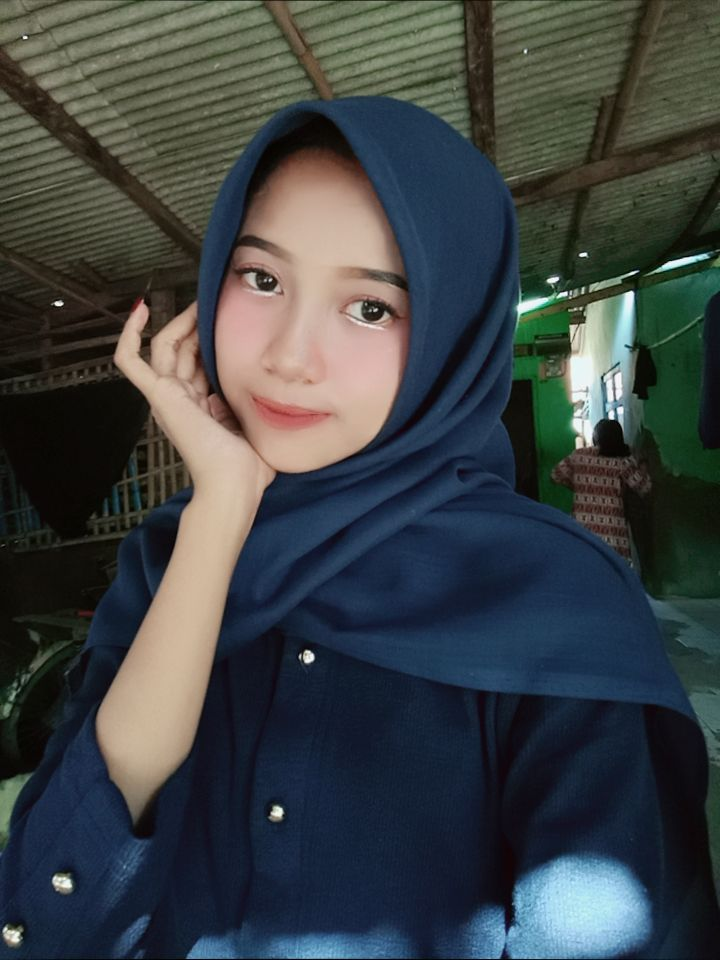

Saya merupakan lulusan SMK Negeri 1 Pebayuran jurusan Teknik Komputer dan Jaringan (TKJ). Saya memiliki semangat belajar, bertanggung jawab, disiplin, dan tertarik untuk mengembangkan kemampuan di bidang teknologi informasi.
Lihat Profil Saya
Tarsih
Bekasi, 25 Juni 2008
Perempuan
Kp.Bojong Jaya
Islam
Lulusan SMK
Indonesia
ttarsih225@gmail.com
Perkenalkan, nama saya Tarsih. Saya merupakan lulusan SMK Negeri 1 Pebayuran jurusan Teknik Komputer dan Jaringan. Saya memiliki pengetahuan dasar mengenai perangkat keras komputer, instalasi sistem operasi, jaringan LAN, konfigurasi VLAN, serta pembuatan website menggunakan HTML dan CSS. Saya senang mempelajari hal baru, mampu bekerja sama dalam tim, dan memiliki motivasi untuk terus berkembang di dunia kerja.
SMKN 1 Pebayuran
2020 - 2021SMPN 2 Pebayuran
2023 - 2024SDN Sumbersari 01
2026 - 2027Membuat struktur halaman website.
Mendesain tampilan halaman website.
Memahami dasar instalasi jaringan komputer.
Memahami dasar konfigurasi jaringan VLAN.
Menggunakan Word, Excel, dan PowerPoint.
Memahami komponen dan perakitan komputer.
Melaksanakan PKL di PT Kharisma Insan Mandalina saat kelas XI pada bagian Produksi Kabel. Mendapatkan pengalaman dunia kerja, melatih kedisiplinan, ketelitian, tanggung jawab, dan kerja sama dalam menyelesaikan tugas.
Membuat halaman website sederhana menggunakan HTML dan CSS sebagai salah satu bentuk pengembangan keterampilan di bidang teknologi.
Terima kasih telah mengunjungi portofolio pribadi saya. Saya terbuka untuk kesempatan kerja dan pengalaman baru.
Email: ttarsih225@gmail.com
Instagram: @ta4_cheerful
Telepon: +62 881-0103-46945